Dejamos un año más atrás y nos metemos en el nuevo 2009 con las mismas ganas e ilusiones de cuando inauguramos el blog, momento ya lejano y que dio pie al crecimiento de nuestro proyecto y, como no, a una de nuestras aficiones favoritas, la música. En este año hemos sufrido cambios importantes, como el abandono de alguno de nuestros miembros, la llegada de alguno nuevo y sobretodo, el paso a un dominio particular gracias al apoyo mostrado por nuestros lectores/oyentes, además de la creación de un foro particular para todos vosotros.
En cuanto a lo musical, nos hemos propuesto elaborar unos tops por cada miembro del blog para mostrar lo que según nosotros han sido los mejores discos del año 2008, a nivel internacional y luego nacional, además a través de él podreis acceder a nuestras distintas críticas, comentarios y descargas de cada uno de los diferentes discos, donde podreis observar la diferencia de gustos entre cada uno de nosotros, lo cual ha hecho que este blog sea tan variado y pretenda mostrar una gran gama de estilos, discos y grupos. Sin más desearos un feliz año 2009 y disfruteis de los próximos discos que vendrán.
Además, en nuestro propio foro, vosotros, nuestros lectores también podreis participar en las votaciones a lo mejor del año 2008, entra y muestranos tu lista de mejores discos y ayuda a elegir el mejor disco del año aquí.
NUESTROS MEJORES DISCOS INTERNACIONALES DEL AÑO:
Mcore:
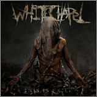
Whitechapel – This Is Exile
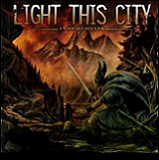
Light This City – Stormchaser
Bring Me The Horizon – Suicide Season
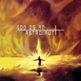
God Is An Astronaut – God Is An Astronaut
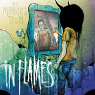
In Flames – The Mirror’s Truth [EP]
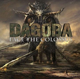
Dagoba – Face The Colossus
Menciones especiales para: For The Fallen Dreams, Misery Signals, Have Heart, Trivium, Brother Von Doom
Rokklagið
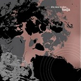
Nadja – Skin Turns To Glass
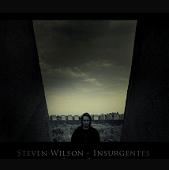
Steven Wilson – Insurgentes
Have A Nice Life – Deathconsciouness
The Mars Volta – The Bedlam In Goliath
Sigur Ros – med sud i eyrum vid spilum endalaust
Cult Of Luna – Eternal Kingdom
Nadja – The Bungled & The Botched
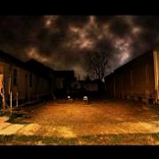
The Gutter Twins Saturnalia
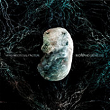
Mind Necrosis Factor – Morphogenesis
Menciones especiales para: Esoteric, The Evpatoria Report, GIAA, Boris, Merzbow, Lights Out Asia, Rise Against, Opeth, Maybeshewill.
Tharandur
The Mars Volta – The Bedlam In Goliath
This Will Destroy Yout – This Will Destroy You
Fear Before – Fear Before
Hanzel Und Gretyl – 2012 Zwanzig Zwölf
Maybeshewill – Not For Want Of Trying
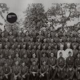
Russian Circles – Station
Menciones especiales para: Expedición a las Estrellas, Gojira, Sigur Rós, Steve Wilson, Hocico, Bauhaus, Les Olé, The Cure, Have a Nice Life, Murder By Death, Maybeshewill, Putilatex, Steve Wilson, God Is An Astronaut, This Morn’ Omina, Cult of Luna, Wednesday 13, Bleeding Through, Nine Inch Nails (Ghosts), Impure Wilhelmina…
Daboryuu
Maybeshewill – Not For Want Of Trying
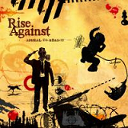
Rise Against – Appeal To Reason
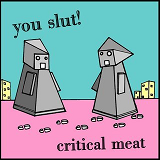
You Slut! – Critical Meat
Cradle Of Filth – Goodspeed On The Devil’s Thunder
God Is An Astronaut – God Is An Astronaut
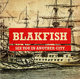
Blakfish – See You In Another City
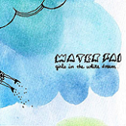
Water Fai – Girls in the White Dream
Sigur Ros – med sud i eyrum vid spilum endalaust
Louko
The Mars Volta – The Bedlam In Goliath
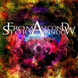
From A Second Story Window – Conversations
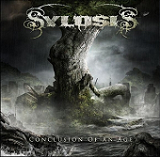
Sylosis – Conclusion Of An Age
The Stiletto Formal – Fiesta, Fiesta, Fiesta, Fiesta
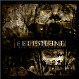
Fell Silent – The Hidden Words

As Eden Burns – The Great Celestial Delusion
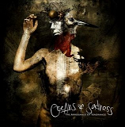
Oceans Of Sadness -The Arrogance Of Ignorance
Menciones especiales para los discos de: After The Burial, Slipknot, All Shall Perish, Bring Me The Horizon, Metallica, Mouth Of the Architect, Maybeshewill, Hanzel Und Gretyl, Trivium, Protest The Hero, Ligeia, Raunchy, Dagoba, From First To Last, Fear My Thoughts, All Against The World, The Human Abstract, Bleeding Through, Trenches…
Xyzzzz
The Mars Volta – The Bedlam In Goliath
God Is An Astronaut – God Is An Astronaut
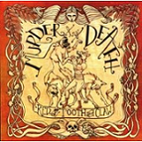
Murder By Death – Red And Tooth And Claw
Sigur Ros – med sud i eyrum vid spilum endalaust
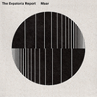
The Evpatoria Report – Maas
The Gutter Twins – Adorata [EP]
Aristodrigo
Cult Of Luna – Eternal Kingdom
Have A Nice Life – Deathconsciouness
Nadja – The Bungled & The Botched
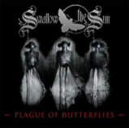
Swallow the Sun – Plague of Butterflies [EP]
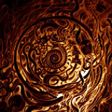
Esoteric – The Maniacal Vale
Virgin Black – Requiem – Fortissimo
Mouth of the Architect – Quietly
Menciones especiales para los discos de: Amenra, Pantheist, Skepticism, Gojira, Meshuggah, Septicflesh, Venetian Snares, The Mars Volta, Cynic, Steve Von Till, Scott Kelly, NIN, Nadja, Murder by Death, Moonspell, Enslaved, Amaseffer, Arkan, Amon Amarth, Impure Wilhelmina…
Hyde
The Mars Volta – The Bedlam In Goliath
Cult Of Luna – Eternal Kingdom
Mouth of the Architect – Quietly
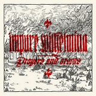
Impure Wilhelmina – Prayers and Arsons
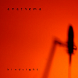
Anathema – Hindsight
God Is An Astronaut – God Is An Astronaut
Maybeshewill – Not For Want Of Trying
Russian Circles – Station
NUESTROS MEJORES DISCOS NACIONALES DEL AÑO:
Mcore
Tharandur
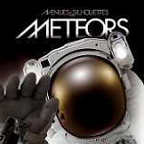
Avenues & Silhouettes – Meteors
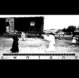
The Big Sleep In Search Of Hades – Ownland
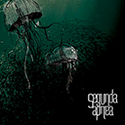
Segunda Apnea – Segunda Apnea
Daboryuu
Lendakaris Muertos – Vine, vi y me vendí
Naixroxa – Iqharaturic
Avenues & Silhouettes – Meteors
Louko
Sound Of Silence – Nuestro Amor A La Agonía
Xyzzzz
Apoyános